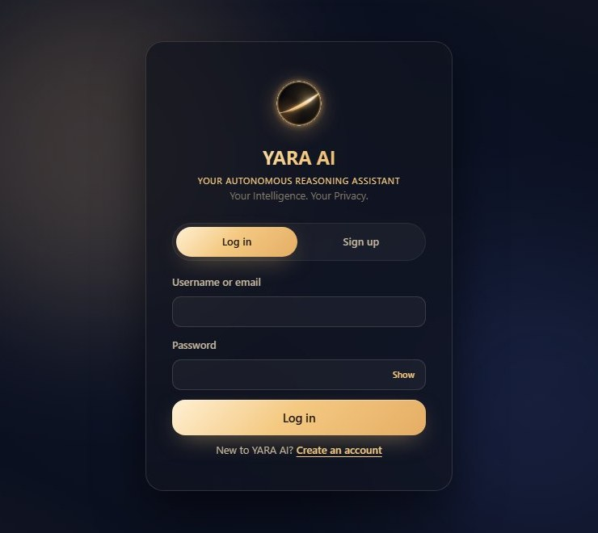

Your Intelligence. Your Privacy.
A personal AI assistant that runs on your own Windows computer: chat, memory, answers from your documents, image generation and image editing. After a one-time model setup it works offline.
Download for Windows
Everything runs on your computer. Each feature below is in the current release; where something has limits, it says so.
Conversations with a language model running on your PC. Answers stream as they are written, and you can stop any reply.
AvailableRemembers your preferences and projects. You choose: off, ask first, or automatic. Passwords are never stored as memories.
AvailableAdd PDF, Word, text and Markdown files and ask questions about them. Answers show the passages they came from.
AvailableWrite text and code, and export documents as TXT, Markdown, HTML, Word or PDF. Generated code is never run.
AvailableCreate a 512 × 512 image from a written prompt with SD-Turbo. Expect roughly 15–25 seconds per image on a typical laptop CPU.
AvailableEdit a photo by describing the change: background, colours, styles, removing or hiding objects. Pose changes and adding text are not supported.
Available, with limitsHeavy work waits for free memory and processor time, so the app stays responsive and your PC isn't overloaded.
AvailableChooses a lighter way to run when your PC is busy and records how requests ran. Trust ratings come from an evaluator, not the model.
PartialNo administrator rights needed. YARA AI installs for your Windows account only.
Open YARA_AI_Setup.exe. The installer is not code-signed yet, so Windows may show “Windows protected your PC”. Choose More info → Run anyway.
Keep “Create a desktop shortcut” ticked. Installing takes about 5 minutes while files are unpacked.
Model Setup opens at the end. Download selected fetches about 7 GB from Hugging Face, the only time YARA AI needs the internet. On a PC without internet, choose Import from folder… and pick a models folder copied from another YARA AI computer.
Use the desktop shortcut. The first start takes about a minute. The first account you create becomes the owner of that installation.
| Item | Needed |
|---|---|
| Windows | Windows 10 or 11, 64-bit |
| Memory | 8 GB minimum; 16 GB recommended for image tools |
| Disk space | About 3 GB for the program, plus about 7 GB for all models |
| Graphics card | Not needed: everything runs on the processor |
| Internet | Only once, to download the models (or import them instead) |
| Model | Size | Used for |
|---|---|---|
| Qwen2.5-1.5B-Instruct (Q4_K_M) | 1.1 GB | Required: chat, text, code, documents |
| all-MiniLM-L6-v2 | 90 MB | Document search |
| SD-Turbo | 4.9 GB | Image generation and editing |
| TAESD | 10 MB | Fast image decoding |
| Face parser (SegFormer) | 320 MB | Hair, face and clothing edits |
| CLIPSeg | 580 MB | Finding objects to edit |
Only the language model is required. If you skip the others, the matching features tell you what is missing and the rest of YARA AI keeps working. Models are downloaded from their publishers on Hugging Face and are covered by their own licences.
YARA AI and its language model listen only on your own computer (127.0.0.1). Your accounts, chats, memories, documents and generated files are stored in %LOCALAPPDATA%\YARA AI, separate from the program. The installer contains no accounts, keys or personal data, and a new session secret is created on each computer. Passwords are stored only as salted hashes.
Honest limits: the language model is small, so answers can be wrong, so check anything important. On computers without a graphics card, long answers and large photo edits take time. Uninstalling asks whether to keep or delete your data folder.
Founder and Developer · B.Tech Computer Science and Engineering
Research and Analyst · B.Tech Computer Science and Engineering
Tester and Debugging · B.Tech Computer Science and Engineering
To check the file was not changed in transit, compare its SHA-256 checksum. In PowerShell: Get-FileHash YARA_AI_Setup.exe
B2FB49B46F8C3101467091A74AB0000749058C81BFDA00A36963072E7E72D758